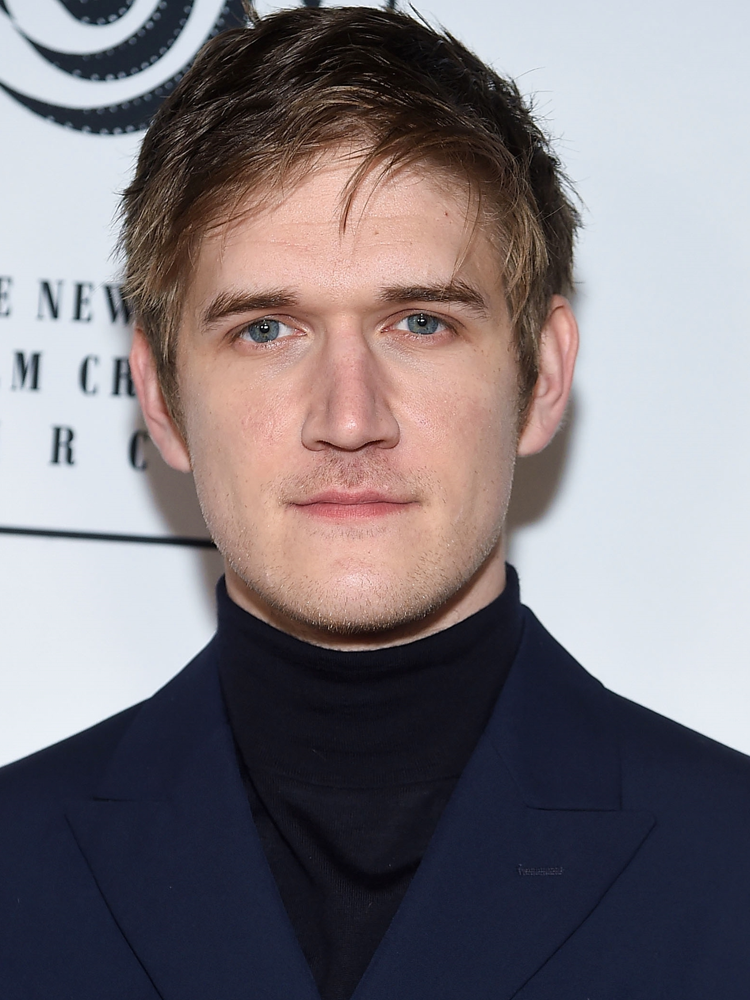

Gabriel Verdani
- Quem sou eu?
Olá, eu sou Gabriel Verdani, tenho 18 anos, nasci dia 17 de Dezembro de 2021 e sou bastante
viciado em jogos e tudo relacionado a isso. Sou filho único, moro com meus pais aqui em Guaianases, São Paulo - SP
desde que nasci, não sou de viajar, o lugar mais longe que fui foi para Jundiaí, mas tenho muita vontade de ir pra
outros estados ou até países, o mundo é enorme. Não sou muito de me comunicar, sou bastante tímido, mas venho
buscando melhorar isso, nem que seja um pouco.
Tem algumas coisas que é importante você saber sobre mim:
- Como disse acima, gosto bastante de jogos, principalmente jogos independentes.< br>Meu jogo favorito é Celeste.
- Não sou de falar muito mas sou um bom ouvinte.
- Tenho bastante interesse em música, instrumentos musicais. Não toco nada, dou uma arranhada no baixo, mas acho
muito bom.
- Algumas receitas que eu recomendo:
- Minha linha do tempo:
- Pessoas que eu admiro:
|
Bo Burnham
|
Biografia |
Data de Nascimento |
|

|
Robert Pickering "Bo" Burnham é um comediante, músico, cantor, compositor, rapper, ator e poeta
norte-americano. Começou atuar como youtuber, em março de 2006, e seus vídeos já receberam mais de
169 milhões de visualizações.
|
21/08/1990
|
| Data da morte |
| Vivo (30 anos) |
| Local do Nascimento |
| Hamilton, Massachusetts, EUA |
|
Tom Scott
|
Biografia |
Data de Nascimento |
|
|
Thomas Scott é um Youtuber inglês, educador, host de game show e Web Developer. Ele é melhor
conhecido por produzir videos online em seu canal do youtube, que compreende principalmente videos
educacionais sobre uma variedade de tópicos incluindo história, ciência, tecnologia e linguística.
|
1984 |
| Data da morte |
| Vivo (37 anos) |
| Local do Nascimento |
| Mansfield, Reino Unido |
| Michael Stevens |
Biografia |
Data de Nascimento |
|
|
Michael Stevens é um educador, comediante, palestrante e youtuber
norte-americano, mais conhecido pelo canal Vsauce do YouTube.
Inicialmente, lançou conteúdo relacionado a videogames, até que a série educacional DOT se tornou
popular e tornou-se o foco do canal, abrangendo explicações de ciências, filosofia, cultura e
ilusão.
|
23/01/1986 |
| Data da morte |
| Vivo (35 anos) |
| Local do Nascimento |
| Kansas City, Missouri, EUA |
Agora é a sua vez!
Fiz um pequeno questionário pois quero te conhecer melhor, responda com carinho